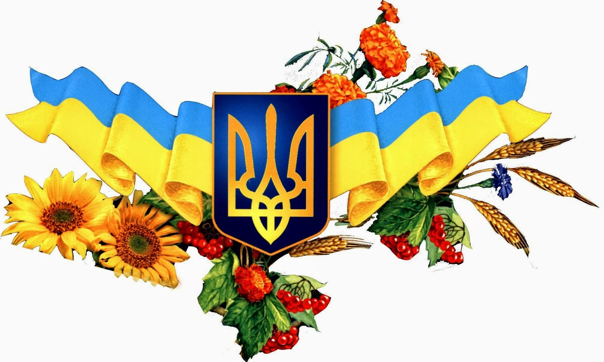

Україна

Україна – країна багата культурною, неповторною історією та неймовірною природою. Розташована в центрі Східної Європи, Україна є колискою слов'янської цивілізації та втіленням багатовікової традиції та сучасності. Земля України вражає своєю різноманітністю. Від захоплюючих гір Карпат до безмежних степів на сході, від кришталевих водойм Львова та Києва до чарівних пляжів Чорного та Азовського морів – кожен куточок цієї країни сповнений природної краси та унікального колориту. Культурний доробок України – це справжнє скарбниця народної творчості. Від давніх часів мелодійний спів, вишиванка та український національний танець, витинанка та кераміка втілювали душу народу. Сьогодні Україна є місцем, де відроджуються старовинні традиції та відбувається неймовірна експансія сучасної мистецької та культурної сцени. Архітектурні пам'ятки України – це вікна в минуле, що розповідають нам про велич давніх цивілізацій. Від середньовічних замків до барокових палаців, від православних соборів до синагог – кожна споруда має свою унікальну історію та архітектурний шарм. Україна – це країна, що вабить своєю гостинністю та теплим прийомом. Незалежно від того, чи виберете ви мальовничі гірські курорти, захоплюючі міські екскурсії чи романтичні прогулянки по селах, Україна завжди зустріне вас відкритими обіймами та запам'ятовуваними враженнями.
Дізнайтеся більше про Україну, натиснувши на відповідну область!
×
чотирма країнами: Угорщиною, Словаччиною, Румунією та Польщею, що робить її важливим транзитним регіоном.
національності. Це відображається у мовній та культурній різноманітності області.
Завдяки своєму географічному розташуванню, область також відіграє важливу роль у міжнародній торгівлі та транспорті.
природними пам'ятками. Серед відомих туристичних місць – замок Паланок у Мукачеві, Синевирське озеро, долина нарцисів,
термальні джерела в Берегові.
різних державних утворень, таких як Угорське королівство, Австро-Угорщина, Чехословаччина, а з 1945 року – до
складу Української РСР, а з 1991 року – до складу незалежної України.
Закарпаття – це регіон з унікальною природою, культурним та історичним багатством, який привертає увагу туристів з усього світу.
Географія та природа
Закарпаття знаходиться в межах Карпатських гір, що надає регіону мальовничі краєвиди та багату природу. Область межує зчотирма країнами: Угорщиною, Словаччиною, Румунією та Польщею, що робить її важливим транзитним регіоном.
Населення
Закарпаття – мультикультурний регіон, де проживають українці, угорці, румуни, словаки, русини, німці та іншінаціональності. Це відображається у мовній та культурній різноманітності області.
Економіка
Основні галузі економіки Закарпаття – сільське господарство, лісове господарство, туризм, а також виноробство.Завдяки своєму географічному розташуванню, область також відіграє важливу роль у міжнародній торгівлі та транспорті.
Культура та туризм
Закарпаття славиться своєю багатою культурною спадщиною, замками, старовинними церквами, дерев'яною архітектурою таприродними пам'ятками. Серед відомих туристичних місць – замок Паланок у Мукачеві, Синевирське озеро, долина нарцисів,
термальні джерела в Берегові.
Історія
Історія Закарпаття дуже багатогранна і пов'язана з багатьма державами та народами. Територія області входила до складурізних державних утворень, таких як Угорське королівство, Австро-Угорщина, Чехословаччина, а з 1945 року – до
складу Української РСР, а з 1991 року – до складу незалежної України.
Закарпаття – це регіон з унікальною природою, культурним та історичним багатством, який привертає увагу туристів з усього світу.
×
Львівщина – це регіон з багатою історією, культурою та традиціями, який продовжує відігравати важливу роль у житті України.
Географія та природа
Львівська область розташована на заході України та межує з Польщею на заході і п'ятьма іншими областями України. Регіон має різноманітний ландшафт, включаючи частину Карпатських гір на півдні, річки, ліси та родючі рівнини.Населення
Львівська область має населення близько 2,5 мільйонів людей. Львів є найбільшим містом області та одним з найбільших в Україні. Область переважно заселена українцями, але також є невеликі громади поляків, росіян та інших національностей.Економіка
Львівська область має різноманітну економіку. Тут розвинені промисловість, сільське господарство, IT-сектор, туризм та торгівля. Львів є важливим логістичним центром завдяки своєму розташуванню поблизу кордону з Європейським Союзом.Культура та туризм
Львівщина відома своєю багатою культурною спадщиною. Львів включений до списку об'єктів Світової спадщини ЮНЕСКО завдяки своїй унікальній архітектурі та історичному центру. Серед основних туристичних атракцій області: Старе місто Львова з його численними костелами, соборами та театрами, Личаківський цвинтар – історичне кладовище, де поховані видатні діячі, Оперний театр – один з найкрасивіших в Європі, замки Львівщини – Золота підкова, яка включає Олеський, Підгорецький та Золочівський замки, Карпати – чудове місце для гірського туризму, зокрема Сколівські Бескиди.Історія
Львівська область має багату історію, яка охоплює періоди від Київської Русі до сучасності. Львів був заснований в 1256 році князем Данилом Галицьким і швидко став важливим культурним та торговим центром. Протягом століть Львів був під владою Польщі, Австрії, Угорщини, Радянського Союзу, а з 1991 року – незалежної України.Львівщина – це регіон з багатою історією, культурою та традиціями, який продовжує відігравати важливу роль у житті України.
×
Івано-Франківщина – це регіон з унікальною природою, культурним та історичним багатством, який привертає увагу туристів з усього світу.
Географія та природа
Івано-Франківська область розташована в західній частині України. Вона межує з Львівською, Закарпатською, Чернівецькою та Тернопільською областями. Регіон охоплює частину Карпатських гір, включаючи Говерлу – найвищу точку України. Тут є також багато річок, озер та лісів, що надають області мальовничі краєвиди та багату природу.Населення
Івано-Франківська область має населення близько 1,4 мільйонів людей. Основну частину населення становлять українці, але також є невеликі громади поляків, румунів та інших національностей. Область характеризується високою густотою населення у містах і селах.Економіка
Економіка області базується на сільському господарстві, лісовому господарстві, промисловості та туризмі. Івано-Франківськ є важливим промисловим центром з розвиненою хімічною, машинобудівною та легкою промисловістю. Туризм також відіграє важливу роль завдяки наявності гірськолижних курортів, мінеральних джерел та історичних пам'яток.Культура та туризм
Івано-Франківщина славиться своєю багатою культурною спадщиною. Область відома своєю архітектурою, музеями, театрами та фестивалями. Серед основних туристичних атракцій області: Говерла – найвища гора України, Яремче – популярне курортне місто, Манявський Скит – древній монастир, Кам'янецький водоспад та багато інших природних та історичних пам'яток.Історія
Івано-Франківська область має багату історію, яка охоплює періоди від часів Київської Русі до сучасності. Івано-Франківськ, заснований у 1662 році як Станіславів, швидко став важливим культурним та торговим центром. Протягом століть область перебувала під владою Польщі, Австро-Угорщини, Радянського Союзу, а з 1991 року – незалежної України.Івано-Франківщина – це регіон з унікальною природою, культурним та історичним багатством, який привертає увагу туристів з усього світу.
×
Тернопільщина – це регіон з багатою історією, культурою та природними красотами, який продовжує приваблювати туристів та відігравати важливу роль у житті України.
Географія та природа
Тернопільська область розташована у західній частині України. Вона межує з шістьма іншими областями: Львівською, Івано-Франківською, Чернівецькою, Хмельницькою, Рівненською та Волинською. Регіон має різноманітний ландшафт, включаючи річки, ліси, пагорби та родючі рівнини, а також знамениті природні пам'ятки, такі як Дністровський каньйон.Населення
Населення Тернопільської області становить близько 1 мільйона людей. Область переважно заселена українцями, з невеликими громадами поляків, росіян та інших національностей. Тернопіль, адміністративний центр області, є найбільшим містом регіону.Економіка
Економіка Тернопільської області здебільшого базується на сільському господарстві, харчовій промисловості та виробництві будівельних матеріалів. Також розвивається торгівля та легка промисловість. Регіон має значний потенціал у сфері туризму завдяки своїй культурній спадщині та природним красотам.Культура та туризм
Тернопільщина відома своєю багатою культурною спадщиною. Серед основних туристичних атракцій області: замки, зокрема Збаразький, Вишнівецький та Теребовлянський замки, а також печери Оптимістична та Кришталева, які є одними з найбільших у Європі. Крім того, Тернопільський обласний краєзнавчий музей та численні церкви й монастирі приваблюють туристів з усього світу.Історія
Тернопільська область має багату історію, яка охоплює періоди від Київської Русі до сучасності. Тернопіль був заснований у 1540 році польським магнатом Яном Тарновським і швидко став важливим торговим та культурним центром. Протягом століть область була під владою Польщі, Австро-Угорщини, Радянського Союзу, а з 1991 року – незалежної України.Тернопільщина – це регіон з багатою історією, культурою та природними красотами, який продовжує приваблювати туристів та відігравати важливу роль у житті України.
×
Чернівецька область – це регіон з багатою історією, культурою та природними красотами, який продовжує приваблювати туристів та відігравати важливу роль у житті України.
Географія та природа
Чернівецька область розташована на південному заході України. Вона межує з Румунією на південному заході та з трьома іншими областями України: Івано-Франківською, Тернопільською та Хмельницькою. Регіон має різноманітний ландшафт, включаючи частину Карпатських гір, річки, ліси та родючі рівнини.Населення
Чернівецька область має населення близько 900 тисяч людей. Область переважно заселена українцями, але також є значні громади румунів, молдаван, росіян та інших національностей. Чернівці, адміністративний центр області, є найбільшим містом регіону.Економіка
Економіка Чернівецької області здебільшого базується на сільському господарстві, лісовому господарстві, легкій промисловості та туризмі. Важливу роль також відіграє транскордонна торгівля з Румунією. Регіон має значний потенціал у розвитку туристичної інфраструктури завдяки своїм культурним та природним ресурсам.Культура та туризм
Чернівецька область відома своєю багатою культурною спадщиною. Серед основних туристичних атракцій області: Чернівецький національний університет імені Юрія Федьковича, який є об'єктом Світової спадщини ЮНЕСКО, Хотинська фортеця, численні старовинні церкви та монастирі. Також регіон славиться своїми етнографічними музеями та фестивалями.Історія
Чернівецька область має багату історію, яка охоплює періоди від Київської Русі до сучасності. Чернівці були засновані у XII столітті і протягом своєї історії перебували під владою різних держав, включаючи Молдавське князівство, Османську імперію, Австро-Угорщину, Румунію, Радянський Союз, а з 1991 року – незалежної України.Чернівецька область – це регіон з багатою історією, культурою та природними красотами, який продовжує приваблювати туристів та відігравати важливу роль у житті України.
×
Хмельниччина – це регіон з багатою історією, культурою та природними красотами, який продовжує приваблювати туристів та відігравати важливу роль у житті України.
Географія та природа
Хмельницька область розташована в центральній частині Західної України. Вона межує з сімома іншими областями: Тернопільською, Рівненською, Житомирською, Вінницькою, Чернівецькою, Івано-Франківською та Львівською. Регіон характеризується різноманітним ландшафтом, включаючи річки, ліси, пагорби та родючі рівнини.Населення
Населення Хмельницької області становить близько 1,3 мільйона людей. Область переважно заселена українцями, з невеликими громадами росіян, поляків та інших національностей. Хмельницький, адміністративний центр області, є найбільшим містом регіону.Економіка
Економіка Хмельницької області здебільшого базується на сільському господарстві, харчовій промисловості, машинобудуванні, легкій промисловості та виробництві будівельних матеріалів. Також розвивається торгівля та сфера послуг. Регіон має значний потенціал у розвитку туризму завдяки своїй культурній спадщині та природним ресурсам.Культура та туризм
Хмельниччина відома своєю багатою культурною спадщиною. Серед основних туристичних атракцій області: Кам'янець-Подільська фортеця – один з найкраще збережених середньовічних замків України, Національний історико-архітектурний заповідник "Кам'янець", Медобори – національний природний парк, а також численні музеї, церкви та монастирі.Історія
Хмельницька область має багату історію, яка охоплює періоди від Київської Русі до сучасності. Хмельницький був заснований у XV столітті і протягом своєї історії перебував під владою різних держав, включаючи Литовське князівство, Польщу, Османську імперію, Австро-Угорщину, Російську імперію, Радянський Союз, а з 1991 року – незалежної України.Хмельниччина – це регіон з багатою історією, культурою та природними красотами, який продовжує приваблювати туристів та відігравати важливу роль у житті України.
×
Волинь – це регіон з багатою історією, культурою та природними красотами, який продовжує приваблювати туристів та відігравати важливу роль у житті України.
Географія та природа
Волинська область (адміністративний центр – місто Луцьк) розташована на північному заході України. Вона межує з Польщею на заході та з трьома іншими областями України: Львівською, Рівненською та Житомирською. Регіон має різноманітний ландшафт, включаючи річки, озера, ліси та родючі рівнини.Населення
Населення Волинської області становить близько 1 мільйона людей. Область переважно заселена українцями, з невеликими громадами росіян, поляків та інших національностей. Луцьк, адміністративний центр області, є найбільшим містом регіону.Економіка
Економіка Волинської області здебільшого базується на сільському господарстві, харчовій промисловості, легкій промисловості та машинобудуванні. Також розвивається торгівля та сфера послуг. Регіон має значний потенціал у розвитку туризму завдяки своїм культурним та природним ресурсам.Культура та туризм
Волинь відома своєю багатою культурною спадщиною. Серед основних туристичних атракцій області: Луцький замок – один з найкраще збережених середньовічних замків України, Шацькі озера – група мальовничих озер, які приваблюють туристів своєю красою та можливостями для відпочинку, а також численні музеї, церкви та монастирі.Історія
Волинська область має багату історію, яка охоплює періоди від Київської Русі до сучасності. Луцьк був заснований у X столітті і протягом своєї історії перебував під владою різних держав, включаючи Київську Русь, Литовське князівство, Польщу, Російську імперію, Радянський Союз, а з 1991 року – незалежної України.Волинь – це регіон з багатою історією, культурою та природними красотами, який продовжує приваблювати туристів та відігравати важливу роль у житті України.
×
Рівненська область – це регіон з багатою історією, культурою та природними красотами, який приваблює туристів своєю унікальною атмосферою та різноманітністю відпочинкових можливостей.
Географія та природа
Рівненська область розташована на північному заході України. Вона межує з Білоруссю на північному заході та з чотирма іншими областями України: Волинською, Житомирською, Хмельницькою та Львівською. Регіон має переважно рівнинний ландшафт, проте в ньому є також ліси, річки та озера.Населення
Населення Рівненської області становить близько 1,1 мільйона людей. Область переважно заселена українцями, з невеликими громадами поляків, росіян та інших національностей. Рівне, адміністративний центр області, є найбільшим містом регіону.Економіка
Економіка Рівненської області заснована на сільському господарстві, харчовій промисловості, легкій промисловості та деревообробній промисловості. Також розвивається транспортна інфраструктура та сфера послуг. Область має потенціал у розвитку екологічного туризму, оскільки в ній знаходяться численні заповідники та природні пам'ятки.Культура та туризм
Рівненщина має багату культурну спадщину. Серед основних туристичних атракцій області: Рівненський замок, Млинська вежа у Дубні, парки та сквери міста Рівне, а також національні природні парки "Губинський" та "Розточчя". Рівненський обласний краєзнавчий музей та місцеві музеї приваблюють туристів історичними експозиціями.Історія
Рівненська область має давню історію, яка налічує тисячоліття. Рівне, одне з найстаріших міст на території України, було засноване у IX столітті. Протягом історії область перебувала під владою різних держав, включаючи Велике князівство Литовське, Польщу, Російську імперію, Радянський Союз, а з 1991 року – незалежну Україну.Рівненська область – це регіон з багатою історією, культурою та природними красотами, який приваблює туристів своєю унікальною атмосферою та різноманітністю відпочинкових можливостей.
×
Житомирщина – це регіон з багатою історією, культурою та природними красотами, який продовжує приваблювати туристів та відігравати важливу роль у житті України.
Географія та природа
Житомирська область розташована в північно-центральній частині України. Вона межує з п'ятьма іншими областями: Київською, Чернігівською, Київською, Вінницькою та Рівненською. Регіон характеризується різноманітним ландшафтом, включаючи річки, озера, ліси та пагорби. Однією з природних перлин області є річка Тетерів, яка протікає через центр Житомира.Населення
Населення Житомирської області становить близько 1,3 мільйона людей. Область переважно заселена українцями, з невеликими громадами росіян, поляків та інших національностей. Житомир, адміністративний центр області, є найбільшим містом регіону.Економіка
Економіка Житомирської області здебільшого базується на сільському господарстві, харчовій промисловості, машинобудуванні та легкій промисловості. Також значну роль в економіці відіграють будівництво, хімічна та енергетична промисловість. Регіон має потенціал для розвитку туризму завдяки своїм культурним та природним ресурсам.Культура та туризм
Житомирщина відома своєю багатою культурною спадщиною. Серед основних туристичних атракцій області: Житомирський історико-краєзнавчий музей, Володимир-Волинський князівський міст, Валеріанівський монастир, Поліський заповідник, а також численні палацово-паркові комплекси та старовинні церкви.Історія
Житомирська область має давню історію, яка охоплює періоди від Київської Русі до сучасності. Житомир був заснований у IX столітті і протягом своєї історії перебував під владою різних держав, включаючи Литву, Польщу, Російську імперію, Радянський Союз, а з 1991 року – незалежну Україну.Житомирщина – це регіон з багатою історією, культурою та природними красотами, який продовжує приваблювати туристів та відігравати важливу роль у житті України.
×
Вінниччина – це регіон з багатою історією, культурою та природними красотами, який продовжує приваблювати туристів та відігравати важливу роль у житті України.
Географія та природа
Вінницька область розташована в центральній частині України. Вона межує з шістьма іншими областями: Житомирською, Київською, Черкаською, Кіровоградською, Хмельницькою та Чернівецькою. Регіон має різноманітний ландшафт, включаючи річки, озера, ліси та плодородні рівнини. Однією з природних перлин області є річка Південний Буг, яка протікає через Хмельницький та Вінницю.Населення
Населення Вінницької області становить близько 1,6 мільйона людей. Область переважно заселена українцями, з значними громадами росіян, молдован, білорусів та інших національностей. Вінниця, адміністративний центр області, є найбільшим містом регіону.Економіка
Економіка Вінницької області здебільшого базується на сільському господарстві, харчовій промисловості, хімічній та машинобудівній промисловості, виробництві будівельних матеріалів та енергетиці. Також значну роль в економіці відіграють легка промисловість, торгівля та сфера послуг. Регіон має потенціал для розвитку туризму завдяки своїм культурним та природним ресурсам.Культура та туризм
Вінниччина відома своєю багатою культурною спадщиною. Серед основних туристичних атракцій області: Вінницький історичний музей, Пирогівський краєзнавчий музей, Козацький музей у Шаргороді, Пирятинський дендропарк, а також численні палацово-паркові комплекси та старовинні церкви.Історія
Вінницька область має давню історію, яка охоплює періоди від Київської Русі до сучасності. Вінниця була заснована у XII столітті і протягом своєї історії перебувала під владою різних держав, включаючи Литву, Польщу, Російську імперію, Радянський Союз, а з 1991 року – незалежну Україну.Вінниччина – це регіон з багатою історією, культурою та природними красотами, який продовжує приваблювати туристів та відігравати важливу роль у житті України.
×
Київщина – це регіон з великим історичним, культурним і економічним значенням для України, який продовжує приваблювати туристів та інвесторів з усього світу.
Географія та природа
Київська область розташована в центральній частині України і оточує столицю України – Київ. Область межує з семома іншими областями: Чернігівською, Сумською, Полтавською, Черкаською, Вінницькою, Житомирською та областю Київ. Регіон має різноманітний ландшафт, що включає річки, ліси та рівнини.Населення
Населення Київської області становить близько 1,8 мільйона людей. Область переважно заселена українцями, з численними громадами росіян, молдован, білорусів та інших національностей. Більшість мешканців проживає в передмістях Києва або працює у столиці.Економіка
Економіка Київської області має розвинену промисловість, зокрема машинобудування, хімічну, електротехнічну та харчову промисловість. Велике значення має також сільське господарство та будівництво. Область є важливим транспортним вузлом із великою кількістю транспортних маршрутів, що перетинаються через її територію.Культура та туризм
Київщина відома своєю багатою історією та культурною спадщиною. Серед основних туристичних атракцій області: Софіївський парк і монастир, Пирогово – музей під відкритим небом, Києво-Печерська Лавра, Вишгородська фортеця та інші історичні пам'ятки. Також популярні туристичні маршрути в природній зоні на річці Десна та в околицях Києва.Історія
Київська область має багату історію, яка охоплює періоди від Київської Русі до сучасності. Саме тут знаходиться столиця України – місто Київ, яке засноване було у V-VI століттях. Протягом своєї історії область перебувала під владою різних держав, включаючи Київську Русь, Литву, Польщу, Російську імперію, Радянський Союз, а з 1991 року – незалежну Україну.Київщина – це регіон з великим історичним, культурним і економічним значенням для України, який продовжує приваблювати туристів та інвесторів з усього світу.
×
Чернігівщина – це регіон з багатою історією, культурою та природними красотами, який приваблює туристів з усього світу та відіграє важливу роль у житті України.
Географія та природа
Чернігівська область розташована в північній частині України і межує з п'ятьма іншими областями: Київською, Сумською, Полтавською, Луганською та Російською Федерацією. Регіон має різноманітний ландшафт, що включає річки, ліси та плодородні рівнини. Однією з природних перлин області є річка Десна, яка протікає через багато міст і сіл Чернігівщини.Населення
Населення Чернігівської області становить близько 1 мільйона людей. Область переважно заселена українцями, з численними громадами росіян, білорусів, а також представників інших національностей. Чернігів, адміністративний центр області, є найбільшим містом регіону.Економіка
Економіка Чернігівської області базується на сільському господарстві, харчовій промисловості, легкій промисловості та енергетиці. Важливе значення має також машинобудування, хімічна та електротехнічна промисловість. Регіон володіє потенціалом для розвитку туризму завдяки своїм історичним пам'яткам та природним ресурсам.Культура та туризм
Чернігівщина відома своєю багатою історією та культурною спадщиною. Серед основних туристичних атракцій області: Чернігівська Ларська церква, Чернігівська фортеця, музей В.Г. Короленка, Чернігівський історичний музей, а також численні палацово-паркові комплекси та старовинні церкви.Історія
Чернігівська область має багату історію, яка охоплює періоди від Київської Русі до сучасності. Чернігів, одне з найстаріших міст України, був заснований у IX столітті і протягом своєї історії перебував під владою різних держав, включаючи Київську Русь, Литву, Польщу, Російську імперію, Радянський Союз, а з 1991 року – незалежну Україну.Чернігівщина – це регіон з багатою історією, культурою та природними красотами, який приваблює туристів з усього світу та відіграє важливу роль у житті України.
×
Сумська область продовжує бути важливим регіоном України з багатою історією, розвинутою культурною та природною спадщиною, яка приваблює туристів та дослідників з усього світу.
Географія та природа
Сумська область розташована в північній частині України і межує з Білоруссю та областями Київською, Чернігівською, Полтавською, Луганською та Російською Федерацією. Область має різноманітний ландшафт, що включає рівнини, ліси та річкові долини. Однією з визначних природних крас Сумщини є річка Десна, яка протікає через центральну частину області.Населення
Населення Сумської області становить близько 1 мільйона людей. В основному тут проживають українці, а також є представники інших національностей, включаючи росіян, білорусів та представників інших етнічних груп.Економіка
Економіка Сумської області базується на сільському господарстві, хімічній, машинобудівній та легкій промисловості. Сумська область відома також виробництвом будівельних матеріалів та електротехнічної продукції. Важливе значення має транспортна інфраструктура, зокрема залізниця, яка перетинає область.Культура та туризм
Сумська область має багату культурну спадщину, яка охоплює старовинні міста, архітектурні пам'ятки та музеї. Серед туристичних визначних місць можна виділити Сумський краєзнавчий музей, Сумську фортецю, старовинні церкви та палацові комплекси.Історія
Історія Сумської області налічує тисячоліття, що охоплює періоди від Київської Русі до сучасності. Суми, адміністративний центр області, були засновані у XVII столітті та історично відігравали важливу роль як культурний та економічний центр регіону.Сумська область продовжує бути важливим регіоном України з багатою історією, розвинутою культурною та природною спадщиною, яка приваблює туристів та дослідників з усього світу.
×
Полтавська область є важливим культурним та економічним центром України, який приваблює туристів своєю історією, культурою та природними красами.
Географія та природа
Полтавська область розташована в центральній частині України і межує з восьми областями: Черкаською, Київською, Чернігівською, Сумською, Луганською, Харківською, Дніпропетровською та Кіровоградською. Область має переважно рівнинний ландшафт з плодородними чорноземами та численними річками, включаючи Ворсклу та Псіол.Населення
Населення Полтавської області становить близько 1,4 мільйона людей. В області проживають українці, а також є представники росіян, білорусів, татар та інших національностей.Економіка
Економіка Полтавської області базується на сільському господарстві, переробній промисловості, машинобудуванні та енергетиці. Область відома виробництвом сільськогосподарської техніки, харчових продуктів та будівельних матеріалів.Культура та туризм
Полтавська область має багату культурну спадщину, яка включає старовинні міста, церкви та музеї. Серед відомих пам'яток можна відзначити Полтавський історичний музей, Полтавський краєзнавчий музей, архітектурний комплекс "Диканька", пам'ятник Гоголю та інші.Історія
Історія Полтавської області налічує понад тисячу років і пов'язана з багатьма історичними подіями. Полтава, найбільше місто та адміністративний центр області, відома своєю ролью в історії України, зокрема битвою під Полтавою у 1709 році.Полтавська область є важливим культурним та економічним центром України, який приваблює туристів своєю історією, культурою та природними красами.
×
Черкаська область є важливим центром України з багатою історією, розвинутою культурою та природними красами, які привертають увагу туристів і дослідників.
Географія та природа
Черкаська область розташована в центральній частині України і має різноманітний ландшафт, включаючи рівнини, ліси та річкові долини. Область межує з Київською, Полтавською, Кіровоградською, Вінницькою, Житомирською та Чернігівською областями, а також з Чорним та Дніпровським регіонами.Населення
Населення Черкаської області становить приблизно 1,2 мільйона людей. У області проживають українці, а також представники інших національностей, включаючи росіян, білорусів, татар та інших етнічних груп.Економіка
Економіка Черкаської області базується на сільському господарстві, хімічній та переробній промисловості. Область славиться виробництвом сільськогосподарської техніки, харчових продуктів та будівельних матеріалів. Важливе значення має розвиток транспортної інфраструктури, зокрема автомобільних і залізничних маршрутів.Культура та туризм
Черкаська область багата на історичні та культурні пам'ятки. Серед них варто відзначити Канів, де знаходиться традиційний музей Тараса Шевченка, а також інші музеї, пам'ятники архітектури та природні резервати, які приваблюють туристів з усього світу.Історія
Історія Черкаської області налічує багато століть і пов'язана з різними історичними подіями. Канів, який став місцем смерті Тараса Шевченка, має важливе значення в українській культурі та літературі.Черкаська область є важливим центром України з багатою історією, розвинутою культурою та природними красами, які привертають увагу туристів і дослідників.
×
Кіровоградська область є важливим регіоном України з багатою історією, розвинутою культурою та природними красами, які приваблюють туристів і дослідників з усього світу.
Географія та природа
Кіровоградська область розташована в центральній частині України. Вона межує з Вінницькою, Черкаською, Полтавською, Дніпропетровською та Миколаївською областями. Територія області має переважно рівнинний ландшафт з високоякісними чорноземами, що сприяють розвитку сільського господарства.Населення
Населення Кіровоградської області становить близько 900 тисяч осіб. В області проживають українці, а також є представники інших національностей, включаючи росіян, білорусів, молдаван та інші етнічні групи.Економіка
Економіка Кіровоградської області базується переважно на сільському господарстві, зокрема на вирощуванні зернових, олійних культур, овочів та фруктів. Також розвинені галузі переробної промисловості, зокрема харчова, машинобудування та легка промисловість.Культура та туризм
Кіровоградська область відома своєю культурною спадщиною, до складу якої входять музеї, архітектурні пам'ятки та природні заповідники. Серед найбільш відомих туристичних об'єктів можна виділити музей В. О. Сухомлинського у Петропавлівці, Кіровоградський обласний художній музей, а також заповідник "Асканія-Нова".Історія
Історія Кіровоградської області налічує понад два століття і пов'язана з розвитком сільського господарства та індустріалізацією регіону. Місто Кіровоград (тепер Кропивницький), адміністративний центр області, відоме своєю історією та культурними традиціями.Кіровоградська область є важливим регіоном України з багатою історією, розвинутою культурою та природними красами, які приваблюють туристів і дослідників з усього світу.
×
Миколаївська область є важливим регіоном України з розвиненою інфраструктурою, багатою історією та природними красами, які приваблюють туристів і дослідників з усього світу.
Географія та природа
Миколаївська область розташована на південному заході України і межує з Одеською, Херсонською та Кіровоградською областями. Територія області включає південну частину Причорноморської низовини з численними річковими долинами та лиманами.Населення
Населення Миколаївської області становить близько 1,2 мільйона осіб. В області проживають українці, а також є значні групи представників росіян, болгар, греків та інших етнічних груп.Економіка
Економіка Миколаївської області базується переважно на морському та річковому транспорті, сільському господарстві, машинобудуванні та легкій промисловості. Область славиться виробництвом судноплавних судів, судноплавними портами та переробкою сільськогосподарської продукції.Культура та туризм
Миколаївська область має багату культурну спадщину, яка включає музеї, архітектурні пам'ятки та природні заповідники. Серед найвідоміших туристичних об'єктів можна виділити Очаківську фортецю, Скадовський морський порт та історичні пам'ятки міста Миколаїв.Історія
Історія Миколаївської області налічує понад два століття і пов'язана з розвитком морського та річкового транспорту, машинобудування та сільського господарства. Миколаїв, адміністративний центр області, відомий своєю історією, культурою та економічними досягненнями.Миколаївська область є важливим регіоном України з розвиненою інфраструктурою, багатою історією та природними красами, які приваблюють туристів і дослідників з усього світу.
×
Одеська область є важливим регіоном України з розвиненою інфраструктурою, багатою історією та природними красами, які приваблюють туристів і дослідників з усього світу.
Географія та природа
Одеська область розташована на півдні України і межує з Молдовою та Румунією. Територія області включає південну частину Українського степу та частину Причорноморського узбережжя з численними пляжами та курортами.Населення
Населення Одеської області становить близько 2,4 мільйона осіб. В області проживають українці, а також є значні групи представників росіян, болгар, греків та інших етнічних груп.Економіка
Економіка Одеської області базується на морському та річковому транспорті, металургії, сільському господарстві та туризмі. Область славиться виробництвом сталі, хімічних речовин, сільськогосподарської продукції та розвинутим туристичним потенціалом на Одеському побережжі.Культура та туризм
Одеська область має багату культурну спадщину, яка включає музеї, архітектурні пам'ятки та природні заповідники. Серед найвідоміших туристичних об'єктів можна виділити Одеський оперний театр, Потьомкінські сходи, Національний природний парк "Тузланський лиман" та історичні пам'ятки Одеси.Історія
Історія Одеської області налічує понад два століття і пов'язана з розвитком морського та річкового транспорту, торгівлі та культурного життя. Одеса, адміністративний центр області, відома своєю історією, культурою та економічними досягненнями.Одеська область є важливим регіоном України з розвиненою інфраструктурою, багатою історією та природними красами, які приваблюють туристів і дослідників з усього світу.
×
Херсонська область є важливим регіоном України з розвиненою інфраструктурою, багатою історією та природними красами, які приваблюють туристів і дослідників з усього світу.
Географія та природа
Херсонська область розташована на півдні України і межує з Миколаївською, Запорізькою та Одеською областями. Територія області включає південну частину Українського степу, частину Причорноморського узбережжя та дельту річки Дніпро.Населення
Населення Херсонської області становить близько 1 мільйона осіб. В області проживають українці, а також є значні групи представників росіян, болгар, греків та інших етнічних груп.Економіка
Економіка Херсонської області базується на сільському господарстві, металургії, машинобудуванні та розвитку туризму. Область відома вирощуванням зернових, овочів та фруктів, а також розвитком судноплавства на Дніпрі та туристичних маршрутів на берегах річки.Культура та туризм
Херсонська область має багату культурну спадщину, яка включає музеї, архітектурні пам'ятки та природні заповідники. Серед найвідоміших туристичних об'єктів можна виділити Херсонську фортецю, Херсонський морський порт, острів Хортиця та історичні пам'ятки міста Херсон.Історія
Історія Херсонської області налічує понад два століття і пов'язана з розвитком сільського господарства, торгівлі та морського транспорту. Херсон, адміністративний центр області, відомий своєю історією, культурою та економічними досягненнями.Херсонська область є важливим регіоном України з розвиненою інфраструктурою, багатою історією та природними красами, які приваблюють туристів і дослідників з усього світу.
×
Кримська область була важливим регіоном України з багатою історією, культурою та природними багатствами, які привертали туристів та істориків з усього світу.
Географія та природа
Кримська область розташована на південному заході України, на південному сході вона межує з Чорним морем та Азовським морем. Область має різноманітну природу, включаючи гірські масиви, піщані пляжі, каньйони та степові угіддя.Населення
Населення Кримської області складало близько 2,4 мільйона осіб. На території області проживали українці, росіяни, кримські татари та інші етнічні групи, що створювало міжетнічну культурну різноманітність.Економіка
Економіка Кримської області базувалася на сільському господарстві, туризмі, машинобудуванні та видобутку мінеральних ресурсів. Область відома виробництвом виноробних і кондитерських продуктів, а також має багатий туристичний потенціал.Культура та туризм
Кримська область мала багату культурну спадщину, яка включала стародавні міста, музеї, археологічні комплекси та храми. Серед найвідоміших туристичних об'єктів можна було виділити Ластівський палац, Генуезьку фортецю в Судаку, місто Ялта та Ласпіську печеру.Історія
Історія Кримської області має великий культурний і історичний значення, пов'язаний з розвитком давніх грецьких колоній, становленням татарських ханств і періодом російської імперії. Після Другої світової війни Крим став автономною республікою в межах Української РСР.Кримська область була важливим регіоном України з багатою історією, культурою та природними багатствами, які привертали туристів та істориків з усього світу.
×
Запорізька область є важливим регіоном України з багатою історією, культурою та економічним потенціалом.
Географія та природа
Запорізька область розташована в південно-східній частині України. Вона має різноманітну природу, включаючи степові та лісостепові зони, річки Дніпро та Дніпровські водосховища, а також природні заповідники.Населення
Населення Запорізької області становить близько 1,8 мільйона осіб. В основному проживають українці, а також є представники росіян, греків, болгар та інших етнічних груп.Економіка
Економіка Запорізької області зосереджена на промисловому виробництві, включаючи машинобудування, металургію, енергетику та хімічну промисловість. Також важливе значення має сільське господарство, особливо вирощування зернових культур.Культура та туризм
Запорізька область має багату культурну спадщину, яка включає музеї, пам'ятники архітектури, археологічні комплекси та історичні пам'ятки. Серед відомих туристичних об'єктів можна виділити Хортицький острів, Запорізьку Січ, музей-скульптуру «Запорожці на Дніпрі» та історичні міста Пологи та Мелітополь.Історія
Історія Запорізької області налічує сотні років і пов'язана з розвитком козацьких військ на території Запорізької Січі, утворенням промислових центрів та важливих транспортних шляхів вздовж річки Дніпро.Запорізька область є важливим регіоном України з багатою історією, культурою та економічним потенціалом.
×
Дніпропетровська область є важливим регіоном України з багатою історією, культурою та економічним потенціалом.
Географія та природа
Дніпропетровська область розташована в центральній частині України. Вона має різноманітну природу, включаючи степові та лісостепові зони, річки Дніпро та Південний Буг, а також заповідні території.Населення
Населення Дніпропетровської області становить близько 3,2 мільйона осіб. В основному проживають українці, а також значна кількість росіян, євреїв, білорусів та інших етнічних груп.Економіка
Економіка Дніпропетровської області зосереджена на промисловому виробництві, зокрема машинобудуванні, металургії, енергетиці та хімічній промисловості. Також важливе значення має сільське господарство, вирощування зернових та олійних культур.Культура та туризм
Дніпропетровська область володіє багатою культурною спадщиною, яка включає музеї, архітектурні пам'ятки, археологічні комплекси та історичні місця. Тут можна відвідати Музей імені Д. Яворницького, Січеславський парк, пам'ятник Тарасу Шевченку в Каневі та інші цікаві об'єкти.Історія
Історія Дніпропетровської області налічує понад два століття і пов'язана з козацькою історією, індустріалізацією регіону у XIX столітті та розвитком важливих промислових галузей у XX столітті.Дніпропетровська область є важливим регіоном України з багатою історією, культурою та економічним потенціалом.
×
Харківська область є важливим регіоном України з багатою історією, культурою та економічним потенціалом.
Географія та природа
Харківська область розташована в північно-східній частині України. Вона має різноманітну природу, включаючи лісостепові та степові зони, річки Харківське та Удай. Тут також є природні заповідники та ліси.Населення
Населення Харківської області становить близько 2,7 мільйона осіб. В основному проживають українці, а також значна кількість росіян, білорусів, євреїв та інших етнічних груп.Економіка
Економіка Харківської області зосереджена на промисловому виробництві, зокрема машинобудуванні, хімічній промисловості, енергетиці та харчовій промисловості. Велике значення має також сільське господарство, зокрема вирощування зернових культур та овочів.Культура та туризм
Харківська область славиться своєю багатою культурною спадщиною, яка включає музеї, театри, архітектурні пам'ятки та парки. Особливими туристичними об'єктами є Харківський цирк, Покровський монастир, Державний музей історії міста Харкова та інші.Історія
Історія Харківської області налічує понад три століття і пов'язана з козацькою епохою, індустріалізацією у XIX столітті та подіями перших десятиліть XX століття.Харківська область є важливим регіоном України з багатою історією, культурою та економічним потенціалом.
×
Донецька область є важливим регіоном України з багатою історією, культурою та різноманітним економічним потенціалом.
Географія та природа
Донецька область розташована на сході України. Вона має різноманітну природу, включаючи степові та лісостепові зони, річки Донець, Сіверський Донець та інші водойми, а також заповідні території.Населення
Населення Донецької області становить близько 4,3 мільйона осіб. В основному проживають українці, а також значна кількість росіян, греків, татар, євреїв та інших етнічних груп.Економіка
Економіка Донецької області зосереджена на промисловому виробництві, зокрема вугільній, металургійній, машинобудівній та хімічній промисловості. Також розвинуте сільське господарство, зокрема вирощування зернових, овочів та фруктів.Культура та туризм
Донецька область має багату культурну спадщину, яка включає музеї, театри, пам'ятники архітектури та історичні місця. Серед цікавих туристичних об'єктів можна виділити Донецький державний музей історії та культури, музей-меморіал "Сіверський Донець", парки та пам'ятники природи.Історія
Історія Донецької області налічує понад два століття і пов'язана з розвитком промисловості, освоєнням вугільних родовищ та індустріалізацією регіону після другої половини XIX століття.Донецька область є важливим регіоном України з багатою історією, культурою та різноманітним економічним потенціалом.
×
Луганська область є важливим регіоном України з багатою історією, культурою та різноманітним економічним потенціалом.
Географія та природа
Луганська область розташована на сході України, прикордонна з Росією. Територія області має різноманітну природу, включаючи степові та лісостепові зони, річки Сіверський Донець та інші водойми, а також заповідні території.Населення
Населення Луганської області становить близько 2,2 мільйона осіб. В основному проживають українці, а також значна кількість росіян, греків, татар, білорусів та інших етнічних груп.Економіка
Економіка Луганської області зосереджена на промисловому виробництві, зокрема вугільній, металургійній, машинобудівній та хімічній промисловості. Також розвинуте сільське господарство, зокрема вирощування зернових, овочів та фруктів.Культура та туризм
Луганська область має багату культурну спадщину, яка включає музеї, театри, пам'ятники архітектури та історичні місця. Серед цікавих туристичних об'єктів можна виділити Луганський обласний художній музей, Лисичанський археологічний музей, пам'ятник Котовському та інші.Історія
Історія Луганської області налічує понад два століття і пов'язана з розвитком промисловості, освоєнням вугільних родовищ та індустріалізацією регіону після другої половини XIX століття.Луганська область є важливим регіоном України з багатою історією, культурою та різноманітним економічним потенціалом.